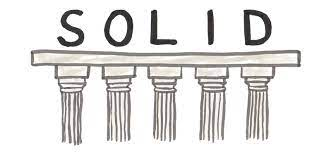
Article 4
Solid object oriented Design
The SOLID Concepts are five Object-Oriented class design principles. They are a collection of guidelines and best practices to adhere to when creating a class hierarchy.
These five concepts explain why certain design patterns and software architecture are necessary.The purpose of this methodology is to "To create understandable, readable, and testable code that many developers can collaboratively work on."
S.O.L.I.D stands for
S.O.L.I.D stands for
- Single Responsibility
- Open/Closed
- Liskov Substitution
- Interface Segregation
- Dependency Inversion
Single Responsibility
The Single Responsibility Principle states that a class should do one thing and therefore it should have only a single reason to change.
To put it another way, just one conceivable change (database logic, logging logic, and so on.) in the software's definition should have an impact on the class's
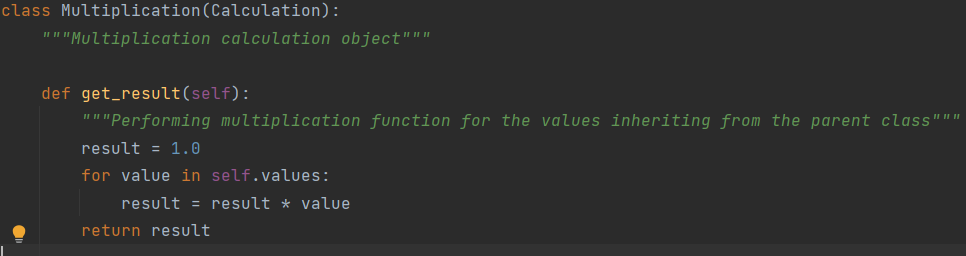
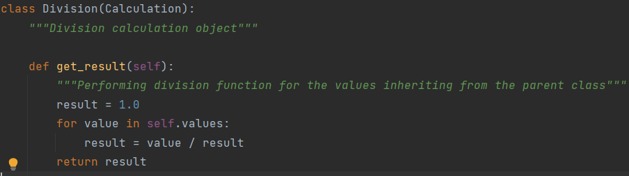
Demonstration: In this project, We are creating seperate classes for each and every mathematical operations.So each class will perform only one operation.For example, In the above image we can see that Division class will only perform division function.
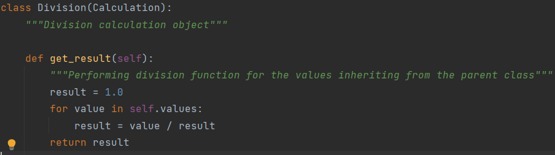
Demonstration: In this project, We are creating seperate classes for each and every mathematical operations.So each class will perform only one operation.For example, In the above image we can see that Division class will only perform division function.
Open-Closed Principle
The Open-Closed Principle requires that classes should be open for extension and closed to modification.
Modification means changing the code of an existing class, and extension means adding new functionality.
We should be able to add new functionality to the class without modifying the existing code. This is because everytime we change current code, we run the risk of introducing new bugs. As a result, if at all possible, we should avoid touching the tested and trustworthy (mainly) production code.
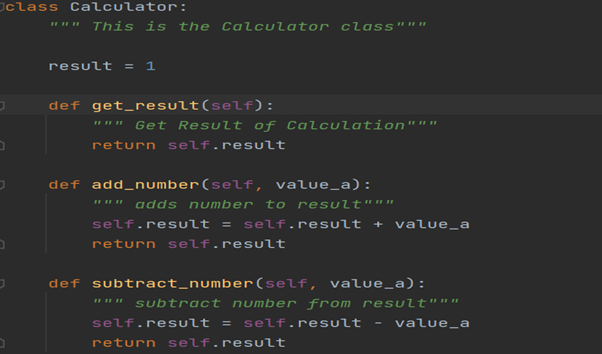
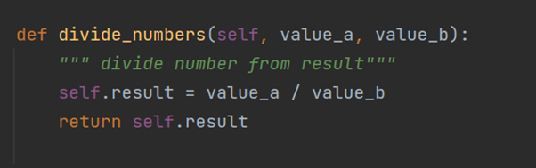
Demonstration:Earlier in this project only three operations were performed that were addition, subtraction, multiplication. Later on Division method was added in the calculator class. We can say that calculator class was open for extension and at the same time division method did not do any modifications to other methods of that respective class.
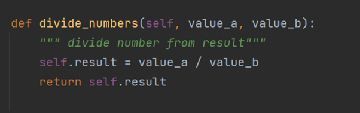
Demonstration:Earlier in this project only three operations were performed that were addition, subtraction, multiplication. Later on Division method was added in the calculator class. We can say that calculator class was open for extension and at the same time division method did not do any modifications to other methods of that respective class.
Liskov Substitution Principle
When an object of a child class replaces an object of its base class, an OOP application operates normally. In basic terms, an apple object should be able to substitute a fruit object without causing the application to crash.
LSP is attained by ensuring two things. To begin, any method in a child class that overrides a method in a parent class must accept the same amount of arguments as the parent and must be either as restrictive or less restrictive in terms of the type of arguments as the parent. Second, the return values of overridden methods must be of the same type as the parent class methods' return values, and they must be as restrictive as or less stringent.
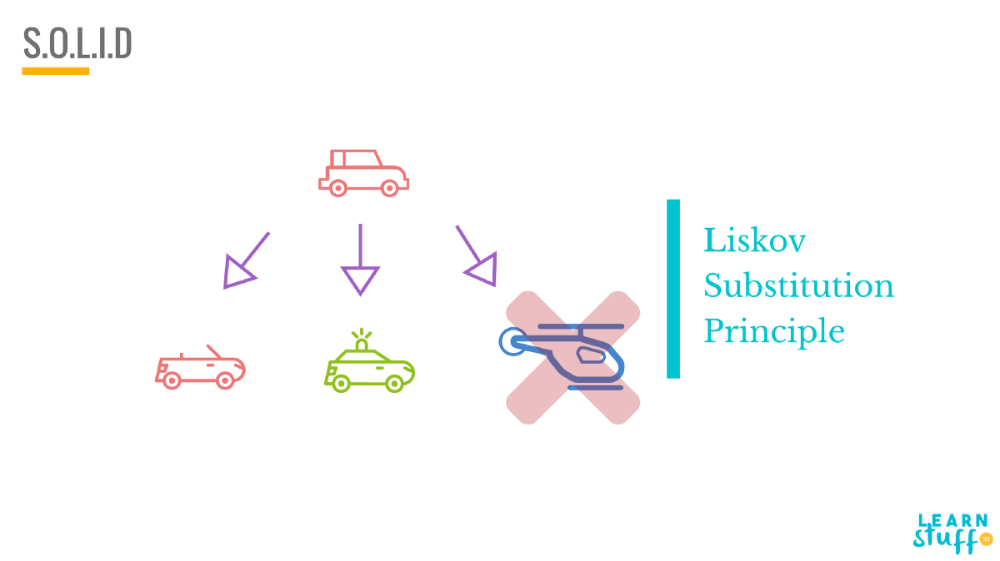
Interface Segregation Principle
The I in SOLID stands for interface segregation, and it simply means that larger interfaces should be split into smaller ones. By doing so, we can ensure that implementing classes only need to be concerned about the methods that are of interest to them.
Segregation means keeping things separated, and the Interface Segregation Principle is about separating the interfaces.
The principle states that many client-specific interfaces are better than one general-purpose interface.
Demonstration:In figure A, we can see that all the interfaces are implemented into one single class.
In Figure B, code has been updated and segragation is done.All the interfaces have got seperated and the user can now implement according the need of the user.
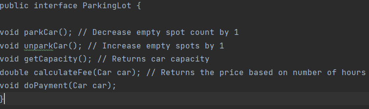
Figure A
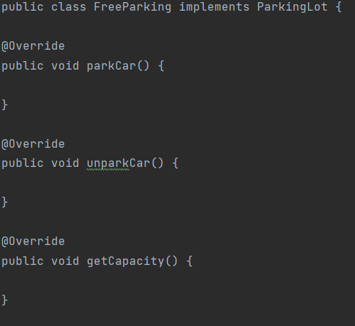
Figure B
Demonstration:In figure A, we can see that all the interfaces are implemented into one single class.
In Figure B, code has been updated and segragation is done.All the interfaces have got seperated and the user can now implement according the need of the user.
Dependency Inversion Principle
The Dependency Inversion principle states that our classes should depend upon interfaces or abstract classes instead of concrete classes and functions.
Entities must depend on abstractions, not on concretions. It states that the high-level module must not depend on the low-level module, but they should depend on abstractions.
Demonstration:In this program instead of directly returning the values. The values are being fetched using a interface.
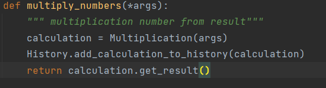
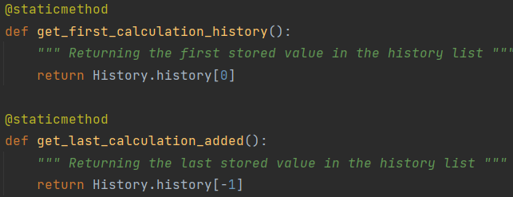
Demonstration:In this program instead of directly returning the values. The values are being fetched using a interface.